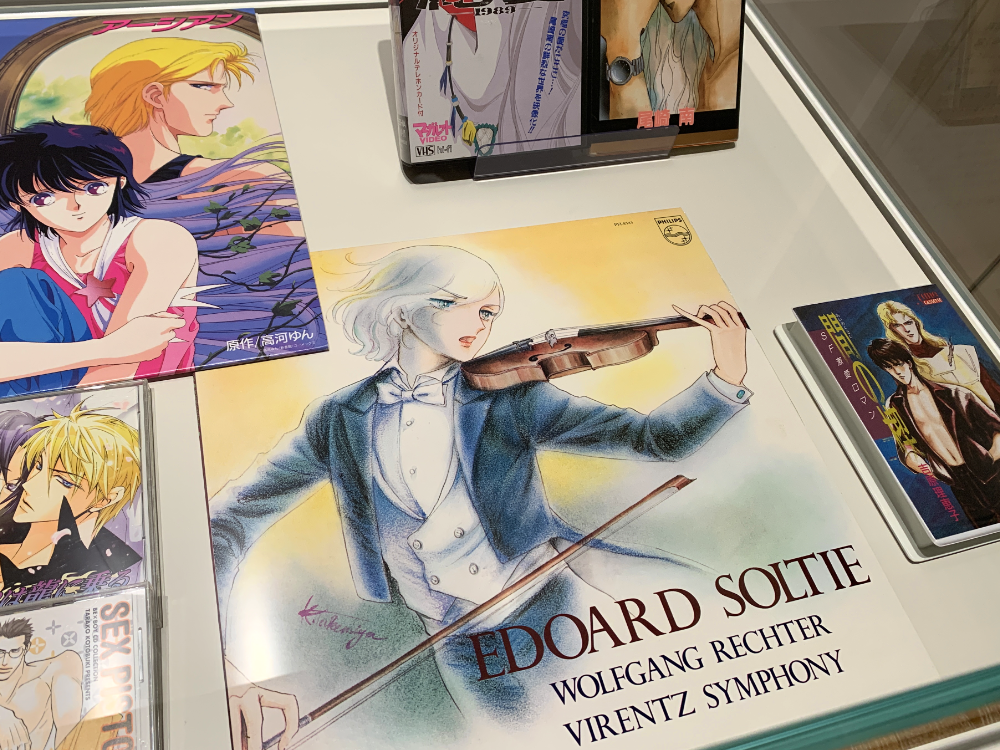
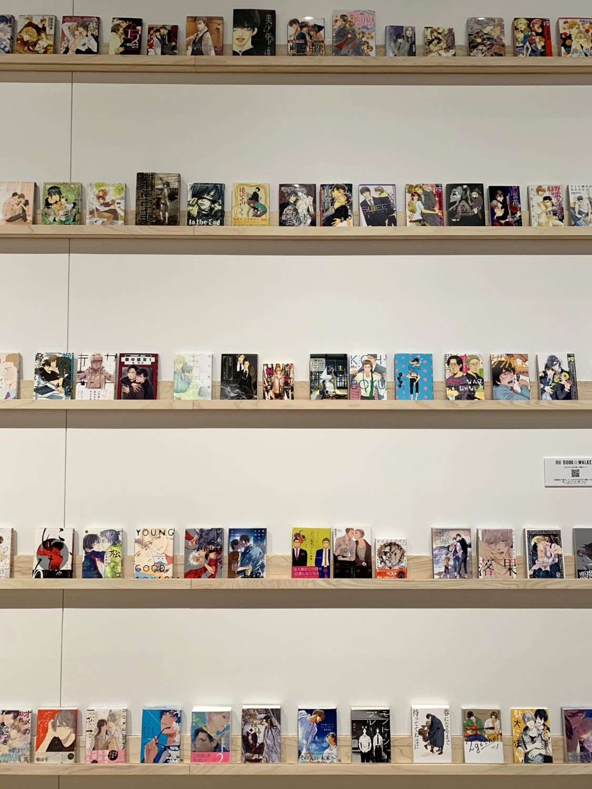
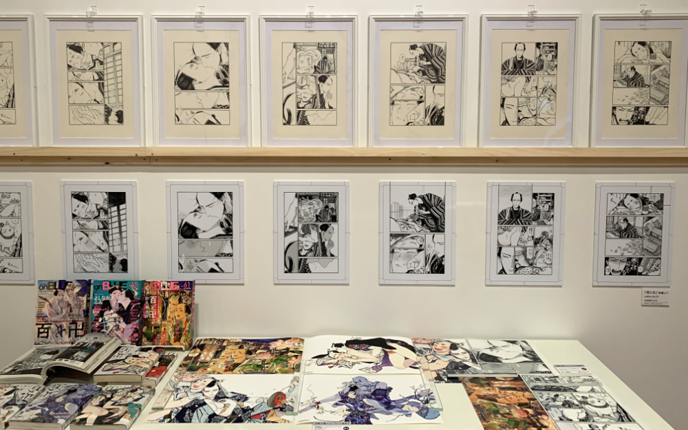
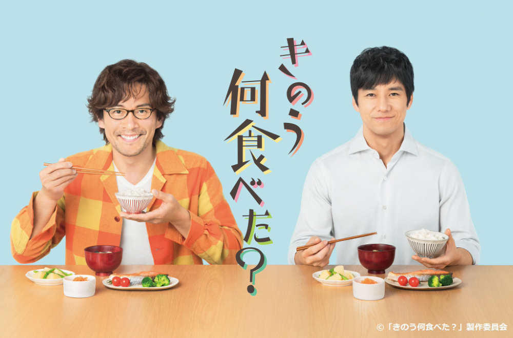
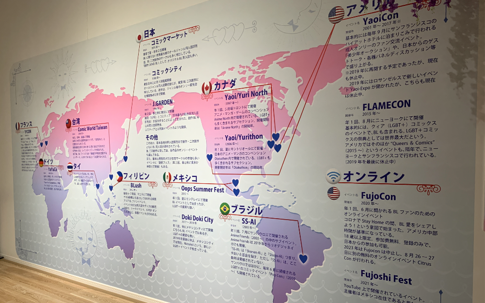
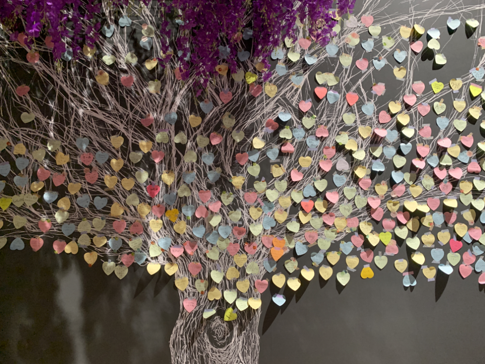
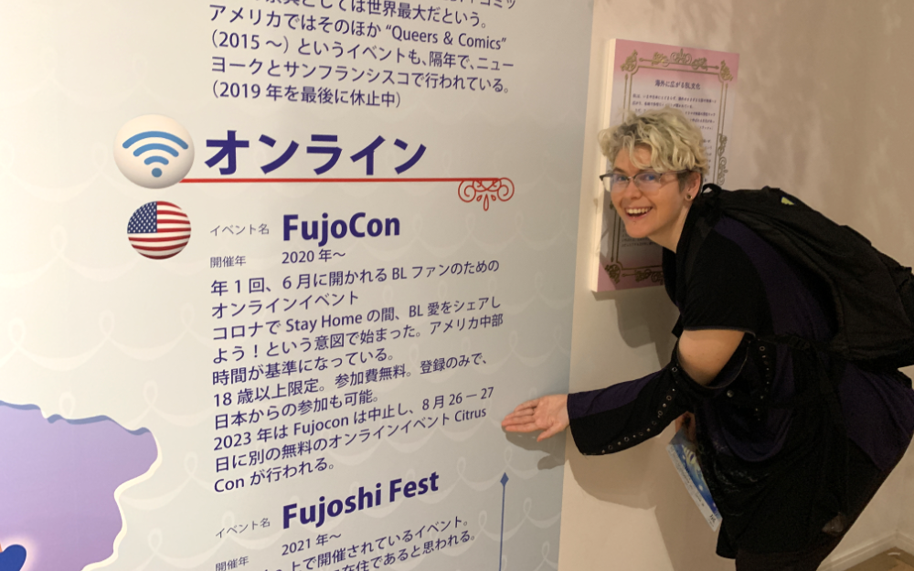

This is Part Two of a two-part series. Part One can be found here.
For a limited time from May 20th ~ July 16th, the Kadokawa Culture Museum ran a "First Boy's Love Exhibit" covering the roots and history of the Boy's Love (BL) genre in Japan and abroad. I attended during that time.
In Part One, I wrote about the history of Japanese BL from the 1960's to 1990's. After the 90's BL boom, trends in the BL genre began to emerge. In Part Two, I'll be covering tropes, parodies and modern BL in Japan, and my impressions of the exhibit overall.
1990's Tropes in BL/Yaoi
Pulling back from serious debates on feminism and queer liberation, as the BL and yaoi genre became more diverse, clear tropes began to emerge. This part does not cover barazoku and geicomi, which are genres distinct from BL and deserve their own article.
Some tropes in BL include:
- seme/uke roles: the protagonist and the main love interest were often given the role of either seme (top) or uke (bottom). These roles were often fixed.
- visible size difference: in some BL, the uke was physically smaller and more feminine in appearance; the seme, more broad-shouldered and masculine. Even in works whose characters were both masculine-coded there typically was, even if slight, a size difference.
- disproportional hands: characters had exaggerated hands and fingers disproportional to their bodies. (CJ Note: This is also known as "yaoi hands" in the English-speaking fandom.)
- triangular faces: masculine-coded characters would typically have a strong, triangular chin and angular appearance.
Coming back to the manga in the exhibit, I noticed strong tropes, especially in the manga from the 90's and 00's. The characters with distorted bodies that clearly showed who was the seme and uke in the work.

The exhibit covered only manga through publishers, not dōjinshi (fan-made works) but fanworks were a strong undercurrent of the BL community. Some dōjinshi authors like Maki Murakami (author of Gravitation), went on to make their own popular original BL series.
2010 Parodies of Tropes in BL
Naturally, once tropes became overused, parodies emerged. In both in the Japanese-speaking and English-speaking fandoms, dōjinshi artists of the 2010's poked fun at BL tropes by making parodies.
- Gakuen Handsome: a parody game based on a popular BL series, Gakuen Heaven. The players meet different boys, drawn with overexaggerated features and date them. (Game on DLSite)
- Gakuen Handsome Fighters: the sequel to Gakuen Handsome, a side-scrolling beat 'em up where you play as characters in Gakuen Handsome and take out street trash. (Game on Steam)
- Dorito-faced Senpai and Shota Boy: This was not featured in the exhibit, but it is an example of the English-speaking fandom noticing these tropes and making their own parodies. This is a parody of seme characters having a masculine, angular chin and uke characters typically looking/being underage, or shota. (Original on Webtoons)

An honorable mention for meta-analysis of the BL fandom goes to Kankai na Fujoshi: a parody comic by _k_a_o_m_o_j_i_ describing different "types" of fujin as garden animals. For instance, Snake has a fixed uke character they love; and cannot read content from Frog, who accepts the seme and uke switching roles. [1] (Original on Twitter | Book)

Returning back to the pre 2010's for a moment; as BL grew more widespread, so did the channels with which fans could enjoy BL. Series like Zetsuai, which were previously serialized in manga, got an animation; Hensoukyoku, which is a 1976 manga about the relationship between Wolfgang Richter and Edoard Soltie has a vinyl recording of the Virentz Symphony performing songs mentioned in the manga.

This informed the modern BL experience; fans not only could read their favorite BL manga, but also watch it on TV and purchase music from the series.
A Timeline into the Modern Era
Behind the showcase of parodies and vinyl records, we turned around to find a staggering sight; a historical timeline of BL manga starting from some of the first published BL manga at the top to modern BL published in 2023. The shelf stretched across the entire back wall of the exhibit, ending in a gorgeous display dedicated to a popular modern BL, Momo to Manji.
For a full list, BOOKWALKER published a list of all these titles on their website. [2]
You may need to turn safe search off to see all titles.

BL in the 2020's: Momo to Manji
The first time I encountered the manga Momo to Manji was through a column in a Japanese lifestyle magazine titled, "Great reads for BL beginners." I chuckled out loud because it was the first time I'd seen magazines publicly advertising BL as something that even non-fans could enjoy.
Momo to Manji is set in Japan's edo period and features a lascivious romance between a former kagema (male prostitute) and a musician. It is notable as a modern BL as it is not drawing from BL's original "romantic fantasy" roots; the Edo period and kagema were real and existed in Japan's modern history.

Works like "What did you eat yesterday?" and She Loves to Cook, She Loves to Eat follow slice of life gay, bisexual and lesbian couples in modern-day Japanese settings. In fact, "What did you eat yesterday?" recently became serialized as a live-action TV drama through TV Tokyo.
Japanese BL inspired other BL movements abroad; and with it, social change. Professor Yukari Fujomoto of Meiji University points out in her article, "The Evolution of “Boys' Love” Culture: Can BL Spark Social Change?" that as Thailand's BL drama movement grew, so did social acceptance of LGBTQIA+ people. But in Japan, there still exists a gap between the gay community and BL characters. [3]
"Until recently, BL was limited to manga and novels. But TV dramas, with human actors, create a natural connection with reality, despite obviously being fiction. [Fujimoto] feels that they produce a subconscious change in the perception of viewers."
I feel conflicted about Fujimoto's hope. I too, wish for broader acceptance of LGBTQIA+ people in Japan, but especially in the case of "What did you eat yesterday?" the main characters represent the most "socially-acceptable" version of gay people in Japan. The LGBTQIA+ community is diverse and slice-of-life dramas, in my opinion, water down some of the realities of living as a queer person.
Will Japan accept queer people, or will they accept only the idealized version of queer people they see on TV?

BL Conventions Across the World and The Wall
This probably was the most moving part of the exhibit for me. As someone who grew up in the U.S. community and who lives in Japan, no matter what country you are from, if you like BL, you have something in common.
Speaking as a fan, when I saw this wall, I thought, "wow, I'm not alone."

In addition to J.GARDEN in Japan, the map shows Oops! Summer Festa in Mexico, Comic World Taiwan in Taiwan, Y/CON in France, YaYuCon in Germany, and YaoiCon in the U.S. These are the ones pictured; there are likely many more than depicted here.
I was in particular excited to find out FujoCon, an online-only BL event that I had the pleasure of speaking twice at, was also part of this map. FujoCon started in 2020 when many conventions had to be cancelled due to the COVID-19 pandemic. In my experience, it was one of the few conventions that tried to cater to a worldwide audience.
FujoCon is on hiatus at the moment, but another con, CitrusCon is happening next year, August 23-25th 2024. You should check them out [4].
Final Impressions
Behind the map was a gigantic wall of post-its under a wisteria tree. These were impressions and feedback from those before us who visited before us. From their favorite manga to calls for Japan to recognize marriage equality, it warmed my heart to see so much love from folks who came to the museum.
There weren't just comments in Japanese, but people from Taiwan, Korea, and Israel, too. Even though BL as a concept started in Japan, it is dearly loved worldwide.

I have mixed feelings about whether BL itself directly contributes to queer liberation; during the exhibit I felt it initially indirectly contributed by piquing the curiosities and interests of fans. However, the modern BL genre now coexists with a genre of queer media that is growing in popularity.
I can't deny the fact as someone who is nonbinary I saw myself in some of the characters. Their androgyny borders, and sometimes transcends the binary of male or female. I found myself wondering something queer people often wonder: am I attracted to this person, or do I want to be this person?
In my case, a little of both. I was heavily involved in fandom from 2000~2010, but it wasn't until 2020, almost ten years later, that I came out. Would I say BL was part of my realization? Yes. But I wouldn't say it was the only contributing factor.
I enjoyed learning about the history of BL, and moreso, putting together this two-part series as I read several supplemental articles in addition to recounting my experiences. I hope fans and non-fans enjoyed reading this series as much as I enjoyed writing it!
My time at the museum was limited to my experiences and ability to read Japanese; which is generally good but I may not have captured as much nuance as I'd like. There is another report on this museum written for BL News from a Japanese native speaker; if you're interested in another perspective, please take a look at their article [5].

Until next time, y'all!
Additional Resources
- Fanlore, Kankai na Fujoshi.
- BOOKWALKER list of all displayed BL works.
- The Evolution of “Boys' Love” Culture: Can BL Spark Social Change? Fujimoto, Yukari for Nippon.com.
- Eventbrite, Citrus Con 2024.
- 激レア資料の大宝庫!「はじめてのBL展」展示会徹底レポ. via blnews.chil-chil.net
About the Author
CJ is a non-binary fujin, designer and one half of Studio Terranova, a video game studio making LGBTQ+ games. They used to be into BL as a young adult, and took a 10 year long break. During this time they became a queer and feminist advocate.
They enjoy BL and like to talk about it not only from a fan lens, but from a historical and queer lens, too. If you liked this post, consider buying them a coffee.